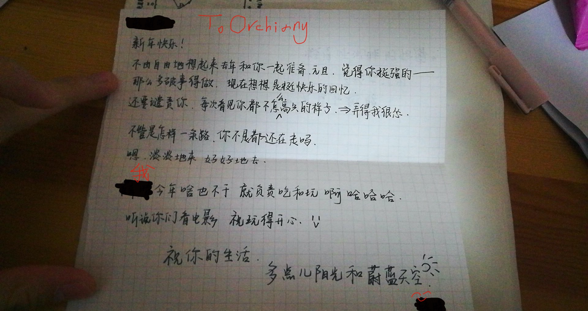

别名：一句话日记
可能就是用来随时记录自己感悟的东西？
1.4
今天决定有心劲一点，结果在机房从 $7：30$ 睡到 $8:30$……可海星
嗯，其实是在学 Min_25筛，学了一上午也没太整明白，就比着题解写了写板子，感觉不太好，那种囫囵吞枣的感觉又涌了上来。不过大致是懂了？
下午继续Min25，顺便写了一下笔记。在看过大多数人让人迷惑的blog之后，发现HN-001神仙 xzz 讲的最清楚明白。于是把大部分知识点给扣清楚了，剩下的小块可能还需要继续追索。
晚上不知道为啥开始一直看《巨人》，从 $90+$ 一直看到了 $123$ 话，期间用 $\rm Min25$ 过掉了杜教筛的板板，觉得自己啥都不会智障的很。
不过好在巨人快看完了？说实话我《巨人》看的没有当年补《海贼》看的详细，因为《海贼》是我去一本一本买的单行本，许多本反复看了好多遍，而巨人甚至连比较长的对白都跳过了。加上作者诡异的紧凑的画风导致观感极差。
不过要说剧情，我比较深的感觉就是，艾伦和三爷，以及他的小伙伴们都回不到原来了。从什么时候开始的呢？大概是从马莱对艾尔迪亚人派出那四个智慧巨人开始的吧，家不家矣，国不国矣。但是你能说出到底是谁错了吗？每个人都坚持着自己心中的正义而已吧……
感觉巨人的思想内核还是很现实的，再加上作者没有尾田那种浪漫主义情怀——毕竟说到底，海贼和巨人的思想内核都很沉重，探索的人性也很复杂，但是尾田却能把海贼画的很浪漫。每次结束战斗都要庆祝，都会看到笑容。我想，其实两部动漫都是在解剖这个社会，但是一个是笑着解剖，一个是哭着解剖吧。
最近感觉很困。听说下周二周三由于高考听力占考场，所以放假。不知道我们放不放。但我觉得不放的可能性更大吧…
1.3
今天准备学最短路树，但是中途穿插着一直在看《进击的巨人》，所以效率不高。
结果发现最短路树其实不难，难的是有一堆十分诡异的题目…比如随手套个点分治之类的233
结果下午就自闭了，自闭在 $\rm TJOI$ 的一道题上，大概就是每次询问删一条边之后 $\rm S\to T$ 的最短路是多少，询问之间独立。看题解看了好久也没整明白…菜死我算了。
然后下午明白之后晚上就写啊，写了好久才写对。然后就蒙逼了。
不知道什么，感觉最近不是那么有心劲了…可能是停课必经的一个阶段吧？我不是很想把这个当做自己在一段卑微的感情中受挫的副产物，那也太惨了吧？
不过很自闭就是了……
我一直在想，或许我就是因为不喜欢文化课才学的奥赛吧？从理智还是从情感上来说，我都更应该去学文化课。所以，我在做什么呢？真的是在追梦吗？每天就这么低下的学习紧张度能做成什么呢？
我找了好久，本来以为找到了自己的路，后来才发现原来自己只是兜了个大圈，又回到原地了而已。
1.2
…上午写完鸽了的题解，然后几乎啥都没干……原因是本来打算学整体二分，结果看到动态图连通性这东西觉得可以学一下，就去学了学ETT——然而其实就是大略地看了那么几眼，明白原理就不看了，回过头来发现这东西好像不是给正常人写的……并且跑的似乎也没有暴力快……于是就又回去学整体二分了。
于是就二分了一下午，我是憨憨。
晚上本来打算很有心劲，结果看起了《进击的巨人》，最终漫画从 $55$ 话看到了第 $70$ 话。本来可以看更多，但是中途有 slyz 的神仙组团来精（教）准（我）扶（做）贫（人），比如我被怒斥：
然后就不敢颓了，就去做题了…
结果写了个整体二分套树剖的题，临走也只拿了 $10$ 分，整个人都不好了……
不过还是很开心的，我也是有小伙伴的人了（嚣张.yml）
然后下午发现了一个很秀的表情：
感觉整个人都朋克起来了233
1.1
颓了一天，下午就返校了。上午主要是看了看B站跨年的回放。⑧说了，邓紫棋天下第一（
晚上突然很难受。还是关于妹子的事，可能我真的需要一段时间才能缓过来吧？感觉自己的祝福，每一句话、每一个字都在痛击自己的心。但是我能怎么样呢？我又能怎么样呢？
又是CSP考完那种无力感：就这样了吗？就这样了吧。
一个人的奥赛室，孤独到让我想哭。是啊，以后就再也不能去找妹子说最近自己心态崩了求安慰之类的话了，也必须要描黑那道若有若无的界限了，感觉生活少了点什么。
但总之，是一个新的开始不是吗？
明天可还要继续啊。
喂喂，pks，我们可是舞台上的战士啊，怎么能这么早就谢幕呢？
《你的答案》_by 阿冗_
也许世界就这样
我也还在路上
没有人能诉说
也许我只能沉默
眼泪湿润眼眶
可又不甘懦弱
低着头 期待白昼
接受所有的嘲讽
向着风 拥抱彩虹
勇敢的向前走
黎明的那道光
会越过黑暗
打破一切恐惧我能
找到答案
哪怕要逆着光
就驱散黑暗
丢弃所有的负担
不再孤单
不再孤单
不再孤单
Goodbye 2019
又是一年啊。
这一年里，我失去了很多，也获得了不少；看清了很多，也迷茫了不少。每一次相遇，每一次离别都值得回忆；每一份高兴，每一分忧伤也都值得我带到未来。
对于2019，「让它好好地来，让它好好地去」，我更喜欢这么来形容。
明年有什么心愿呢？生而为人，握紧很简单，但是放下却很难。然而握得越紧越发现原来没有握住，看得越重越发现自己扑了个空。所以，我希望，我可以一觉醒来发现自己什么都不记得，这样才可以放下之前的所有，大踏步得走向明天。2020，请让我变得更释然一些吧，好吗？
总之呢，谢谢各位一年的陪伴。
2020，这个世界，与我重新来过吧。
12.31
今天早上很高兴地在早读给妹子写完新年快乐的明信片+信，让隔壁班同学当信使给送去。听他说了下最近隔壁班的八卦，发现以前觉得会厮守很久的情侣不在了，以前觉得根本不搭的两个人在一起了。感觉和他们同班的日子已经远去很久了。
顺便知道了原来喜欢的妹子已经有了男票，于是打算把写好的东西扔进垃圾桶。在信使老鸽的劝说下还是没扔，还是送了出去。最后感觉有点惆怅。从初中到现在，自己似乎一直在趟别人的浑水，感觉自己似乎跟他们早就不是一个世界的人了。
是啊，不是一个世界的人了。可能我真的需要破除『我执』了吧，不想再去纠结这些没头没脑的固执了。于是趁着夜幕还没被拽走，便匆匆来到了奥赛室。
冷静思考了思考，发现自己一旦对什么东西有了厌恶感就很难再喜欢上了。所以真正对的那个人应该还没来吧，我需要继续等下去。嗯，从小父母就教导，走丢的时候原地等着是最好的选择。所以也只有等待，才是迎接光明的最好办法吧。
然后晚上她用她闺蜜的 qq 给我发信息。不知道为啥。她说她本来以为我今天下午会在班里看电影（因为我们班奥赛退役选手在其它班联欢的时候，在班里看电影），然而实际上我在奥赛室看了一下午的《进击的巨人》（233。所以她就给我拍过来一张照片：

。。。那个“弄得我很怂”的上文是我问她说每次跟她偶然遇见她为啥都故意不看我233
然后事情是这么发展的：
她：还有一件信息量比较大的事情
她：我脱单了
啊。
下午时一直在想，如果她其实和那个男生还没真正确定的话，我去“兴师问罪”是不是有点不太好？
好在事态的发展没让我那么尴尬……
我当时似乎，似乎是，思考了一瞬间，就已经知道该怎么回她了。那些“为什么你有了男朋友而不告诉我？”和“有了男朋友为什么还要给别人以希望”之类的话，已经被扔到了不知处。
题外话：
……可能大家都不知道我们到底是什么关系，大概就是她知道我一直喜欢她但是我是这么一种心态：
喜欢不等于占有
于是和她就变成了好朋友？起码在聊天软件里还是很铁的（
至于她是什么人，我只能说是很单纯一妹子……就是跟人用qq聊天还用
。。。。这东西做前后缀的人，现如今几乎没有了吧？
嗯，就这样了吗？就这样了吧。
晚上看了看C菌的《心魔》，到最后虽然很爽，但是感觉和《逃生2》差不多，爽是爽了，但是没啥深度。
睡了睡了。
12.30
昨晚不知道为啥宿舍里有一堆蚊子…让人很难过地一点多才睡，于是今天就变成了活死人状态。上午看了看高数，发现到一阶微分方程那里公式已经不是人记的了，于是觉得无聊就不学了。下午和晚上做了做 vfk 曾经出的某场 cf，剩下的时间学了发笛卡尔树就去颓了。
前几天看了梁文道的《我执》，几天晚上方才明白我执的意思，突然很有感触。以下是摘录，转自链接，有删改：
你的名字不是你，你的职业不是你，在哪里上班的那个也不是你，这一切是你的经验，但经验不是你本身。我们经由我们生命的内容来定义自己，我们的年龄、健康、人际关系、财务状况、工作和生活情境以及心理情绪状态等等，但是这些是经验的客体，而不是主体。我们的错误就是会把这些经验当成是我们的主体，然后与它们认同，把它们当成自我的一部分。
一言以蔽之：我执就是在外在事物上所建立的那个虚假的自我感（ 这里的外在事物还包括你的情绪和念头，下面会细谈)。无论你执着什么，你就是在把它当成自我的一部分，而那个东西就是你「我执」的体现。在根本上，并无一个实体的，不变的「我」存在。也正是因为我们把自我感建立在这些外在的事物上，所以当它们变化时，我们的痛苦便产生了。但是这些事物的变化是不可避免的，因为它们的本质便是「无常」。所以，只要你把自我感建立在外在稍纵即逝的事物上，则我们心理上的痛苦就不可避免。
我们的悲哀是，我们终其一生，都只是在为自我填充这一个个意象。财富，权位，知识，还有你执着的任何东西，如果它没有伤害到他人，我想这些都是好东西，但是只要你没有认清这些东西和你的本质是完全无关的，只要你还在这些事物上建立认同感，那你所得到的一切不过是加强我执而已，而当那个意象破灭，则痛苦就将来临。
于是感觉似乎佛教不是印象里那种玄学的宗教，而是一套科学化理论化的世界观和方法论。
我什么时候才能「看惯风波里，闲步红尘外」呢？
12.29
上午考的数学和英语，下午考的语文，成功要到了记忆中上一次合格考跟我一个考场、这次也一个考场的可爱妹子的QQ。感觉到达了人生巅峰。
然后晚上回来学了学支配树，发现有神仙说灭绝树就是支配树，然后发现自己还不会灭绝树，然后就去做灭绝树了233
啊，终于马上要放假了，开森。
12.28
上午在奥赛室背政治……下午考了政治觉得自己还可以。
晚上尝试写了一下「一双木棋」，发现 alpha-beta 只能干出 $70pts$ 来，然后就去颓了。
12.27
没啥好讲的，明天要合格考了，在发愁自己的政治233
12.26
上午下午一共做了三道题，从李煜东的蓝书上看来的。中途写挂了好几次，但是最终调出来还是挺有成就感的。
饭卡丢了，有点郁闷。毕竟电话卡和饭卡是一张卡，电话卡丢了还要去电信营业厅补办。。。太麻烦了吧233
……然后……然后就因为一些奇怪的事情陷入了奇怪的思考。感觉自己正在被拽进奇怪的漩涡中，感觉自己似乎如同「奇异人生」里面 Max 经常梦到的场景，在风暴之中，自己在被撕扯着想要登上灯塔。可惜只有我一个人。
看着一堆东西还没学，也不是很想学。后天还要考政治，什么都没背，感觉有点不太好。
似乎我走迷了路。或者说，我经常会走迷了路。高中到现在为止我一直在追求着什么，放弃了很多，但是到现在我也一直不知道我到底在追求些什么。是奥赛吗？我恍惚了。是功成名就吗？我恍惚了。
感觉到现在为止，我只有每个学期刚刚开始，即18年9月 $\sim$ 10月和今年的9月 $\sim$ 10月有认真学过文化课，剩下的时间都在划水；美其名曰学研究奥赛，学来的线性规划或者 HLPP 可能永远也用不上。我在干什么？其他人丰富有趣、值得回忆的高中生活，在我眼里就是一场又一场的白日梦，一次又一次地跌倒再爬起来再欺骗自己：你没跌倒。这一切的一切，真是我想要的吗？
我又在瞎想了。给梁文道做序的某作家（忘了名字）说，为什么人们喜欢寓哲学于文学呢，因为人们喜欢问没有答案的问题，喜欢去体味这种求索的感觉。可能对我来说，这也算是一点心理安慰了吧。
嗯，写完这些感觉内心明显平静了许多。
12.25
今天有点颓，上午只写了一篇题解，下午做$[\rm SNOI2019]$的D2T1，做了好久，剩下的时间不知道干什么去了。
晚上继续和 ouuuyuuu 出去跑圈。外面开始下雪了，十分开心。但是一边跑，风雪夹带着冷雨扑打过来有点难受。眼镜中途还因为镜面上水太多，想用手套擦，结果擦成了磨砂玻璃…233摘下眼镜来继续跑就会感觉跟喝了一壶一样，看着周围都是一派虚无缥缈的景象。
开始看梁文道的《我执》了。感觉还行。但是毕竟只看了一点，也不知道到底有什么精彩等待着我。
发现自己写文章的时候，可能是因为平时说话说太快了，一直不喜欢加句号。大多数情况下都是一大段全是逗号233
晚上发现胜利一中的神仙们去逛了我的 Luogu 博客，比较开心。因为似乎我也没法跟别人交流了。
瞎扯一句，感觉 rqy 能一个人在这儿奋斗两年，十分厉害。孤独+经常会有的绝望+偶尔的希望，不把人逼自闭已经算是很好了。
诶，刚刚才发现原来自己有三个博客，但是这三个博客上的东西几乎都不一样。。。233
12.24
平安夜，很自闭233
看了一上午+大半个下午的构造，感觉一般。听 ouuuyuuu 说构造题只能长经验，是学不会的，感觉有点小失落。
人总要有梦想，万一我就学会了呢
晚上复盘了一下自己的 $\rm CSP-S~2019$ ，感觉虽然和大家都很有差距，但是如果从进步的意义上来讲，比起去年来自己进步还是蛮多的。毕竟去年也就那点水平。
嗯，所以呢，谁知道将来我会不会进步到我想象不到的水平呢？加油吧，我可是想要创造奇迹的笨蛋啊！
12.23
越来越困了，发现啥都学不会，然后自闭了。
发现去了 pkuwc 的小伙伴们似乎都有约拿了，感觉更自闭了。
……我觉得我现在应该是全校最盼着放寒假的人了。当初觉得似乎机房生活会很轻松，结果发现比文化课生活自闭了不止一个量级。可海星……
发现啥都学不会了，发现比别人拉下的不止一点半点……有点难受，但是一想到马上要放假了（虽然还有一个多月）就会开心一点phh
12.22
……之前换了几天的 jacman 主题，说实话感觉不是很漂亮。换主题的原因是我关了一次 icloud，然后他就给我吞了……迷惑。于是只能重新建一个主题。不过好在我找回了失去的脑子找到了对应的文件夹，于是九成功复原了。于是现在就又换回了 next 主题。
怎么说呢，虽然 next 主题确实用的比较多，有烂大街的嫌疑，但是你要真让我去挑其他的喜欢的并且配置出来，确实很麻烦。
嗯，这个故事告诉我们要学会备份。
12.15
upd:因为不知为啥，hexo的背景炸了，觉得似乎白色也挺漂亮，就决定不设置背景了。
新建了这个文档，本想写很多，结果突然发现自己WC都去不了。
然后就自闭了，我为什么还要死命坚持下去呢？又有什么意义呢？